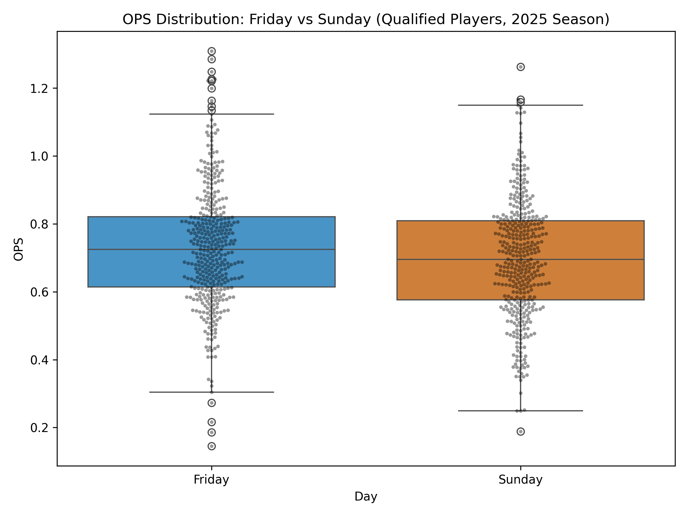

2024–2025 Stolen Base Trends
Tracking year-over-year changes in MLB stolen base totals.
View Analysis →

Exploring advanced metrics, situational hitting, and player performance through data-driven analysis.
Tracking year-over-year changes in MLB stolen base totals.
View Analysis →